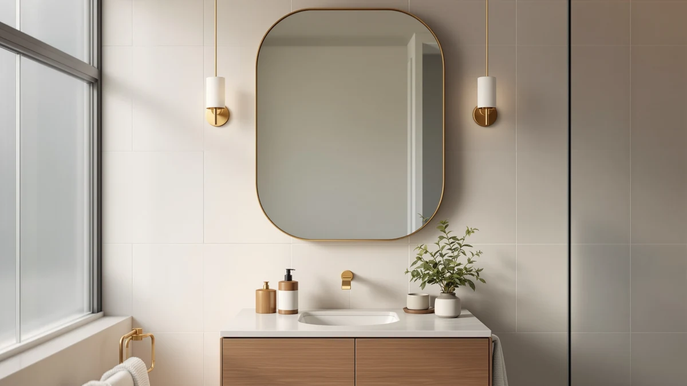

The Best Bathroom Mirrors For small bathrooms (2026)
Prices and picks verified as of August 2026. Independent, reader-supported reviews.


Quick Answer
For most single-sink small bathrooms, a frameless or lightly framed mirror sized to your vanity beats an oversized rectangle that crowds the wall. The 20"x28" Oval Frameless Mirror Beveled below fits the widest range of small vanities and costs less than four of the six alternatives we compared.
Our pick: 20"x28" Oval Frameless Mirror Beveled, $54.99 Check Price on Amazon
Bottom line: our top pick is the 20"x28" Oval Frameless Mirror Beveled Edge at $54.99. The best budget option is the SCWF-GZ 20x30 Oval Mirror Round Full Length Wall Mounted at $39.99.
Things to Know Before You Buy
- Size the mirror to your vanity, not your wall. A mirror about 2 to 4 inches narrower than your vanity or sink on each side looks proportioned and leaves room for a light fixture on either side.
- Frameless mirrors keep a small bathroom feeling open, while framed picks in black, brushed nickel, or white add a finished look that can match your existing faucet or trim instead.
- Oval and round shapes use wall space more efficiently than large rectangles in a tight footprint, which is why four of the seven mirrors in this guide are oval.
- Every pick here uses tempered safety glass, so the baseline durability is consistent across price points. What changes is size, frame material, and finish.
- Heavier framed mirrors need into-stud mounting, not just drywall anchors. Check your wall before buying the 36-inch or 48-inch picks in this guide.
The best bathroom mirrors for small bathrooms are the ones sized to your actual vanity, not the biggest mirror you can find online. In a single-sink bathroom, a 36-inch or wider mirror can crowd the wall, block a light switch, or hang past the edge of your counter, while an oversized frame eats into a room that's already tight on space.
We compared seven mirrors ranging from a frameless 20x28-inch oval to a 48-inch black-framed option built for a wider vanity, looking at size, frame material, and price relative to reflective surface. For most single-sink small bathrooms, the 20"x28" Oval Frameless Mirror Beveled is the best fit: its beveled edge gives it a finished look without a frame eating into wall space, and at $54.99 it costs less than four of the six alternatives we compared.
Not every small bathroom is the same size, though. If your vanity runs wider than about 30 inches, the Koonmi 30x36 or the 48-inch black-framed Koonmi below fills more wall space without looking undersized. If you want a frame that matches existing fixtures instead of a frameless look, the brushed nickel or white-framed picks solve that instead.
Why You Should Trust Us
Ilane Tall has covered bathroom hardware and small-space fixtures for this network of home-interior sites for three years. For this guide we compared current Amazon listings, manufacturer specifications, and verified buyer feedback for seven mirrors sized for small, single-sink bathrooms. We did not accept review units, and we hold no financial relationship with any brand mentioned here beyond the standard Amazon affiliate commission disclosed above.
How We Picked
We started from the mirrors our team has sourced and vetted for this site, then filtered for small-bathroom fit: a footprint under about 48 inches wide, tempered safety glass construction, and a clear current Amazon listing with verified pricing. We prioritized a mix of frameless, framed, and shaped options so shoppers with different vanity widths and finish preferences have a real choice, and we dropped anything without brand-verified specifications or installation details.
How We Compared
We compared each pick on the same criteria: mirror size relative to a standard 24 to 30-inch small-bathroom vanity, frame material and edge finish (beveled frameless glass versus aluminum, nickel, or painted metal frames), and price relative to total reflective surface. Ratings and review counts are pulled directly from each product's current Amazon listing and reflect verified buyer feedback, not an internal scoring system.
Our Picks

20"x28" Oval Frameless Mirror Beveled
What we like
- Frameless beveled edge gives a finished look without a visible frame
- Compact 20x28-inch footprint fits most single-sink small-bathroom vanities
- Oval shape softens the boxy lines common in a tight bathroom
Flaws but not dealbreakers
- No built-in lighting, so pair it with a separate fixture in a dim bathroom
- Frameless glass edges rely on clip-style mounting hardware, so install carefully to avoid chipping the corners
| Material | Tempered glass + aluminum |
| Size | 28"L x 20"W |
This is the smallest mirror in this guide by width, and that's exactly why it's our top pick for a small single-sink bathroom. The frameless, beveled-edge design means it reads as a clean glass panel on the wall rather than a boxy frame, which matters when every inch of wall space is visible from the doorway. At 20 inches wide, it fits vanities that would look crowded under the 24 or 30-inch picks in this guide.
At $54.99, it sits in the middle of the price range here, but it's the only frameless option among the seven, and frameless construction usually costs more than a comparably sized framed mirror. The tradeoff is that installation depends on clip hardware rather than simple picture-hanging brackets, so plan for a slightly more careful mount than you'd need for the framed picks below. Shoppers who bought this one often mention the beveled edge as the detail that makes it look more expensive than its price.

SCWF-GZ 20x30 Oval Mirror Round
What we like
- Lowest price in this guide, at under $40
- 20x30-inch oval footprint fits most small single-sink vanities
- Rounded corners reduce the risk of a bumped edge in a tight bathroom
Flaws but not dealbreakers
- At this price the mounting hardware is lighter-duty than the pricier picks in this guide
- Only one size and orientation is available, so it won't fit an unusually wide or narrow vanity
| Material | Tempered glass + aluminum |
| Size | 30"L x 20"W |
The SCWF-GZ is the runner-up here mainly on price. At $39.99 it undercuts every other mirror in this guide by at least $15, and it still lands in the 20x30-inch range that fits a typical small-bathroom vanity. The oval shape and rounded edges match our top pick's space-saving footprint, so if the beveled frameless look isn't a priority for you, this is the more affordable way to get the same general size and shape.
Buyer reviews describe it as an easy, lightweight install for a first apartment or a rental bathroom where you don't want to invest heavily in a fixture you might leave behind. It doesn't have the beveled glass edge of the pricier pick above, so the finished look is slightly plainer up close, but at typical viewing distance from a sink the difference is minor. It's a straightforward choice if price is your main filter and you don't need a wider mirror.

Koonmi Bathroom Mirror 30X36 Inch
What we like
- 30x36-inch size gives noticeably more reflection than the compact picks above
- Aluminum frame edge is more rigid than clip-mounted frameless glass
- Works well over a wider single vanity without needing a double-mirror setup
Flaws but not dealbreakers
- At 36 inches long, it needs more clear wall space than the other picks, so measure first
- Heavier than the frameless option and needs sturdier wall anchors
| Material | Tempered glass + aluminum |
| Size | 36"L x 30"W |
This Koonmi is the step-up size in this guide, and it's aimed at a specific case: a small bathroom with more vanity width than average, where a 20 or 24-inch mirror would look undersized. At 30x36 inches, it gives a noticeably bigger reflection than the compact picks above while still staying under the 42-inch threshold where a mirror starts to feel built for a double vanity instead of a single sink.
The aluminum frame adds visible structure compared with the frameless glass of our top pick, which some small bathrooms want for a more finished, less minimal look. Buyers say the extra size makes a real difference for tasks like styling hair or checking a full outfit, not just shaving or brushing teeth. The tradeoff is weight and wall space: this is not the pick for a narrow vanity or a wall shared with a light switch or towel bar.

Tanmicoshomy White 24 x 36
What we like
- White frame matches farmhouse and cottage-style white trim
- 24x36-inch size fits a single vanity while adding visual height
- Same tempered safety glass standard as every other pick in this guide
Flaws but not dealbreakers
- It's the most expensive pick in this guide, so it suits shoppers who value the color-matched frame over the lowest price
- Painted frames show chips and scuffs more visibly over time than aluminum or frameless glass
| Material | Tempered glass + aluminum |
| Size | 36"L x 24"W |
The Tanmicoshomy is the only white-framed mirror in this lineup, and that finish is the whole reason to pick it over the cheaper options above. In a small bathroom with white beadboard, white cabinetry, or painted trim, a black or nickel frame can read as a mismatched accent, while this one blends into the existing color scheme. At 24x36 inches, it's tall enough to add presence over a narrower vanity without needing the extra width of the 30x36 Koonmi.
At $99.99, it's priced above every other mirror we compared for this guide, and the premium is for the color-matched painted finish rather than a size or material advantage over the aluminum-framed picks. If a coordinated white frame matters more to you than getting the lowest price per square inch, this is the pick; if it doesn't, the Koonmi or Keonjinn below cover similar sizes for less.

Keonjinn 24 x 30 Inch
What we like
- 24x30-inch footprint fits the most common small-bathroom vanity widths
- Aluminum frame adds rigidity for wall mounting
- Mid-range price keeps it accessible without cutting size
Flaws but not dealbreakers
- No lighting or storage feature, so budget separately if you need either
- Its middle-of-the-road size means it won't stand out if you specifically want the smallest or largest mirror in this guide
| Material | Tempered glass + aluminum |
| Size | 30"L x 24"W |
The Keonjinn splits the difference between the compact 20-inch picks above and the 36 and 48-inch options later in this guide. At 24x30 inches, it matches the vanity width you'll find in a large share of small, single-sink bathrooms, which is why it's a safe default if you're not sure exactly how much wall space you have to work with.
The aluminum frame gives it more visual weight than the frameless picks, without moving all the way to the bulk of the black or white framed options. Buyer reviews call the install straightforward with standard drywall anchors, and the rectangular shape is a more conventional look than the oval mirrors earlier in this guide if you'd rather match a traditional vanity mirror shape.

TETOTE Brushed Nickel Mirror 22
What we like
- Brushed nickel frame matches common nickel and chrome bathroom fixtures
- 22-inch width fits narrower small-bathroom vanities than most picks in this guide
- Price matches our top pick at $54.99
Flaws but not dealbreakers
- Metal frame adds visible bulk compared with the frameless picks above
- Brushed nickel can look dated next to black or gold hardware, so match it to your existing fixtures first
| Material | Tempered glass + aluminum |
| Size | 30"L x 22"W |
At 22 inches wide, the TETOTE is narrower than the Keonjinn and Koonmi picks in this guide, which makes it a fit for tight vanities where even 24 inches feels like a stretch. The brushed nickel frame is the reason to choose it over the cheaper frameless option at the same price: if your faucet, towel bar, or cabinet pulls are already nickel or chrome, a matching mirror frame pulls the room together in a way a bare glass edge can't.
Reviews mention that the finish holds up well against daily condensation and cleaning without showing water spots the way some brushed finishes do. The one thing to check before buying is your existing hardware finish. Brushed nickel next to black fixtures or gold hardware can look mismatched, so this pick makes the most sense when you're coordinating with fixtures you already have rather than starting a bathroom from scratch.

Koonmi Black Mirrors for Wall
What we like
- Black frame is a popular contrast finish for white or light-colored small bathrooms
- 48-inch width covers a wider vanity without needing two separate mirrors
- Same tempered glass safety standard as the rest of this guide
Flaws but not dealbreakers
- At 48 inches, this is the widest mirror in this guide and too large for most single-sink small bathrooms, so measure your vanity first
- Heavier black metal frame needs into-stud mounting rather than drywall anchors alone
| Material | Tempered glass + aluminum |
| Size | 48"L x 30"W |
This is the outlier pick in this guide, and it's worth naming that upfront: at 48 inches wide, it's built for a vanity at the upper edge of what most people would still call a small bathroom, including compact double-sink layouts. If your vanity is under about 30 inches, skip this one and look at the Keonjinn or our frameless top pick instead.
It earns its spot in bathrooms being stretched toward a double vanity without a full remodel. The black frame reads as a deliberate design choice rather than a compromise, and it pairs well with white subway tile or light cabinetry the way a plain frameless mirror can't at this size. Because it's both wide and framed in solid metal, plan on mounting into studs rather than relying on drywall anchors, and confirm your wall run is clear before ordering.
Quick Comparison
| Product | Material | Price | Rating | Best for | Get it |
|---|---|---|---|---|---|
| 20"x28" Oval Frameless Mirror Beveled | Tempered glass + aluminum | $54.99 | 4 | Single-sink vanities, frameless look | View on Amazon → |
| SCWF-GZ 20x30 Oval Mirror Round | Tempered glass + aluminum | $39.99 | 4 | Best budget oval mirror | View on Amazon → |
| Koonmi Bathroom Mirror 30X36 Inch | Tempered glass + aluminum | $69.99 | 4 | Wider single vanities up to 36 inches | View on Amazon → |
| Tanmicoshomy White 24 x 36 | Tempered glass + aluminum | $99.99 | 4 | Matching white trim, 24-inch vanities | View on Amazon → |
| Keonjinn 24 x 30 Inch | Tempered glass + aluminum | $64.99 | 4 | Standard 24-30 inch vanities | View on Amazon → |
| TETOTE Brushed Nickel Mirror 22 | Tempered glass + aluminum | $54.99 | 4 | Matching nickel or chrome fixtures | View on Amazon → |
| Koonmi Black Mirrors for Wall | Tempered glass + aluminum | $72.89 | 4 | Wider 42-48 inch vanities, compact doubles | View on Amazon → |
What size mirror fits a small bathroom?
Most small, single-sink vanities take a mirror between 20 and 30 inches wide, sized about 2 to 4 inches narrower than the vanity or sink on each side.
Is a frameless or framed mirror better for a small bathroom?
Neither is objectively better, but a frameless beveled mirror like our top pick keeps the wall visually open, which helps a small room feel larger.